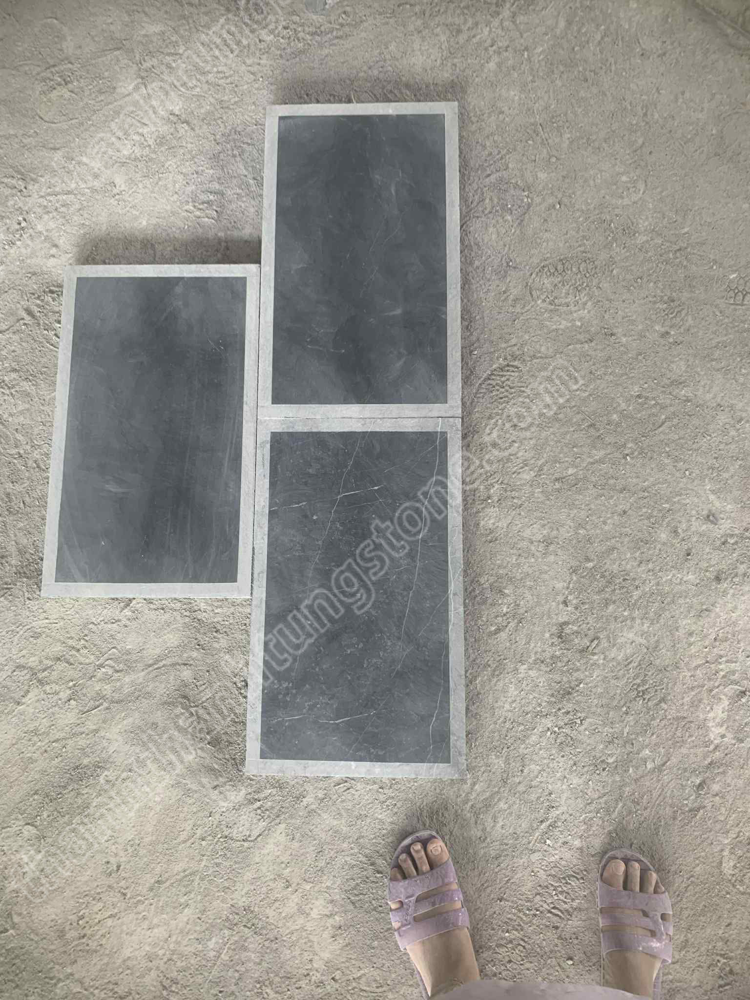
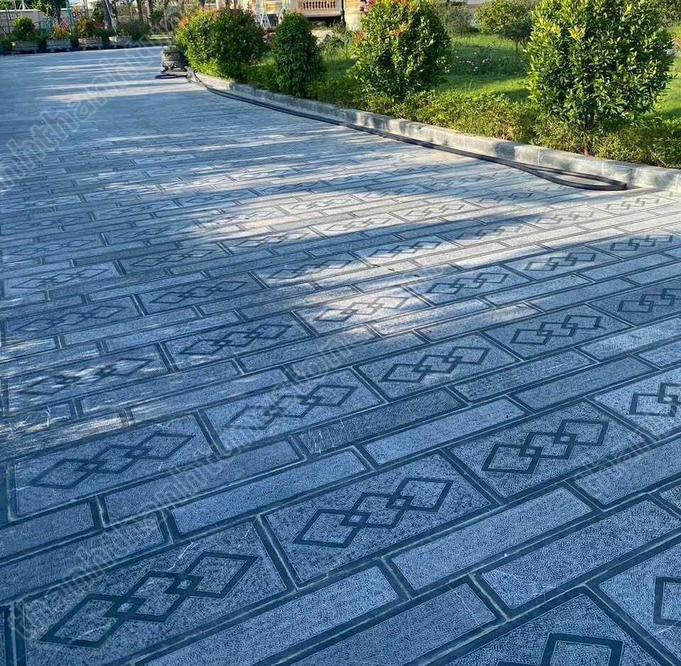
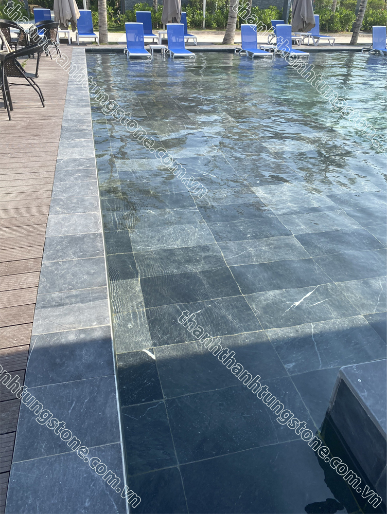

🏛️ Cập Nhật Báo Giá Đá Xanh Đen Thanh Hóa Lát Sân Vườn Mới Nhất 2026
Trong xu hướng thiết kế kiến trúc cảnh quan hiện đại năm 2026, đá xanh đen Thanh Hóa vẫn giữ vững vị thế là dòng đá tự nhiên quốc dân được săn đón hàng đầu. Sở hữu sắc trầm mạnh mẽ, độ cứng vượt trội cùng khả năng chống chịu thời tiết khắc nghiệt, loại đá này là giải pháp hoàn hảo để nâng tầm đẳng cấp cho các hạng mục ngoại thất từ biệt thự, resort cho đến các công trình công cộng.
Bài viết dưới đây từ Thanh Thanh Tùng Stone sẽ cung cấp cho quý khách hàng, chủ đầu tư cái nhìn toàn diện về đặc điểm, tính ứng dụng và bảng báo giá đá xanh đen Thanh Hóa mới nhất năm 2026.
🔗 Xem thêm bài viết liên quan: [Báo giá chi tiết đá xanh rêu Thanh Hóa 2026]
1. Những Ưu Điểm Tạo Nên Giá Trị Của Đá Xanh Đen Thanh Hóa 🌿
Không phải ngẫu nhiên mà dòng đá khai thác từ các mỏ đá tự nhiên Thanh Hóa lại được các kiến trúc sư ưu ái đến vậy. Sản phẩm hội tụ những điểm cộng đắt giá:
- 🎨 Sắc xanh đen sang trọng, thời thượng: Tông màu trầm tối mang nét đẹp mộc mạc nhưng cực kỳ lôi cuốn. Khi gặp nước mưa, đá sẽ chuyển sang màu đen thẫm bóng bẩy, tạo nên hiệu ứng thị giác tuyệt đẹp cho sân vườn.
- 💪 Kết cấu đá già, chịu lực cực tốt: Trải qua hàng triệu năm kiến tạo địa chất, đá có mật độ vật chất đặc khít, không lo rạn nứt hay om vỡ trước áp lực tải trọng của xe ô tô ra vào hàng ngày.
- 🚶 Chống trơn trượt tuyệt đối: Thông qua các phương pháp chế tác bề mặt như băm mặt, khò lửa hay mài nhám, đá tạo độ ma sát cao, bảo vệ an toàn cho các thành viên trong gia đình khi di chuyển vào mùa mưa.
- 🧽 Kháng rêu mốc, dễ dàng lau chùi: Đá xanh đen tự nhiên có độ thấm hút nước cực thấp, ngăn chặn sự phát triển của vi khuẩn và rêu mốc, giúp mặt sân luôn sạch sẽ, giữ nguyên vẻ đẹp như mới.

2. Lợi Ích Lâu Dài Khi Lựa Chọn Đá Xanh Đen Lát Sân ✅
Việc đầu tư đá tự nhiên Thanh Hóa ngay từ đầu mang lại cho gia chủ những giá trị kinh tế và thẩm mỹ bền vững:
- ✨ Nâng tầm không gian sống: Sắc xanh đen dễ dàng hòa quyện cùng mảng xanh của cây cối, tiểu cảnh, tạo nên một tổng thể kiến trúc ngoại thất hài hòa, bề thế.
- ⏳ Tuổi thọ thách thức thời gian: Khác với gạch men dễ bong tróc hay đá nhân tạo nhanh bợt màu, đá xanh đen càng dùng lâu càng lì, càng lên nước đá đẹp.
- 💰 Tối ưu chi phí bảo dưỡng: Nhờ độ bền vĩnh cửu, chủ nhà hầu như không phải tốn thêm chi phí sửa chữa, sụt lún hay thay thế nền sân trong suốt hàng chục năm sử dụng.

3. Bảng Báo Giá Đá Xanh Đen Thanh Hóa Mới Nhất 2026 📋
Mức giá của đá xanh đen Thanh Hóa thực tế sẽ dao động tùy thuộc vào quy cách kích thước (30x30, 30x60, 40x40cm...), độ dày phôi đá (2cm, 3cm, 5cm) cũng như khối lượng đặt hàng và vị trí vận chuyển.
Dưới đây là bảng giá tham khảo tại xưởng Thanh Thanh Tùng Stone năm 2026:
| STT | Phân Loại Sản Phẩm | Đơn Giá Tham Khảo (đ/m²) | Đơn Vị Tính |
|---|---|---|---|
| 1 | Đá xanh đen mài hone / mài mịn | 330.000 – 435.000 | m² |
| 2 | Đá xanh đen băm mặt toàn phần | 330.000 – 435.000 | m² |
| 3 | Đá xanh đen băm mặt trừ viền | 345.000 – 450.000 | m² |
| 4 | Đá cubic xanh đen cắt thô | 670.000 – 880.000 | m² |
| 5 | Đá cubic xanh đen băm mặt (10x10x5 cm) | 730.000 – 910.000 | m² |
📌 Lưu ý: Bảng giá trên mang tính chất tham khảo tại thời điểm hiện tại. Đối với các đơn hàng dự án số lượng lớn hoặc quy cách cắt theo bản vẽ riêng, quý khách vui lòng liên hệ hotline trực tiếp để nhận chính sách chiết khấu tốt nhất.

4. Các Hạng Mục Ứng Dụng Phổ Biến 🏗️
Nhờ tính đa năng và độ bền bỉ cao, đá xanh đen Thanh Hóa xuất hiện dày đặc tại các hạng mục:
- ✔ 🌳 Lát nền sân sảnh biệt thự, resort, khu đô thị sinh thái.
- ✔ 🚶 Làm đá lát lối đi dạo, vỉa hè, hành lang sân vườn.
- ✔ 🪜 Ốp lát bậc tam cấp, bậc thang ngoài trời chịu lực.
- ✔ 💧 Lát khu vực xung quanh hồ bơi, tiểu cảnh non bộ.
- ✔ ⛩️ Ốp lát các công trình kiến trúc tâm linh, nhà thờ họ, đình chùa.

5. Tại Sao Nên Chọn Mua Đá Tại Thanh Thanh Tùng Stone? ⭐
Giữa hàng trăm đơn vị cung cấp trên thị trường, Thanh Thanh Tùng Stone tự hào là địa chỉ tin cậy được hàng ngàn nhà thầu và gia chủ lựa chọn nhờ:
- • Nguồn gốc rõ ràng: 100% phôi đá được khai thác từ các mỏ đá tự nhiên gia tuổi nhất tại Thanh Hóa.
- • Năng lực sản xuất lớn: Hệ thống nhà xưởng máy móc hiện đại, đáp ứng nhanh chóng tiến độ các dự án B2B số lượng lớn.
- • Gia công tinh xảo: Đội ngũ thợ lành nghề, cắt quy cách chuẩn chỉnh, bo cạnh, cà viền tỉ mỉ từng viên.
- • Giá gốc tận xưởng: Không qua trung gian, mang lại lợi ích kinh tế tốt nhất cho khách hàng.
Kết Luận 🔎
Đá xanh đen Thanh Hóa chính là mảnh ghép hoàn hảo để hoàn thiện vẻ đẹp kiến trúc ngoại thất vững chãi bền lâu cho công trình của bạn. Đừng ngần ngại đầu tư một lần để nhận lại giá trị thẩm mỹ trường tồn mãi về sau.
Quý khách hàng có nhu cầu tư vấn kích thước phong thủy, chọn mẫu đá thực tế hoặc nhận báo giá ưu đãi chính xác nhất cho công trình của mình, hãy liên hệ ngay với Thanh Thanh Tùng Stone hôm nay:
🏛️ CÔNG TY CỔ PHẦN THANH THANH TÙNG
🔗 Website: thanhthanhtungstone.com
📞 Hotline trực xưởng 24/7: 097 929 8888
📥 Địa chỉ tổng kho: 228, đường Trịnh Huy Quang, phường Đông Quang, Tỉnh Thanh Hóa